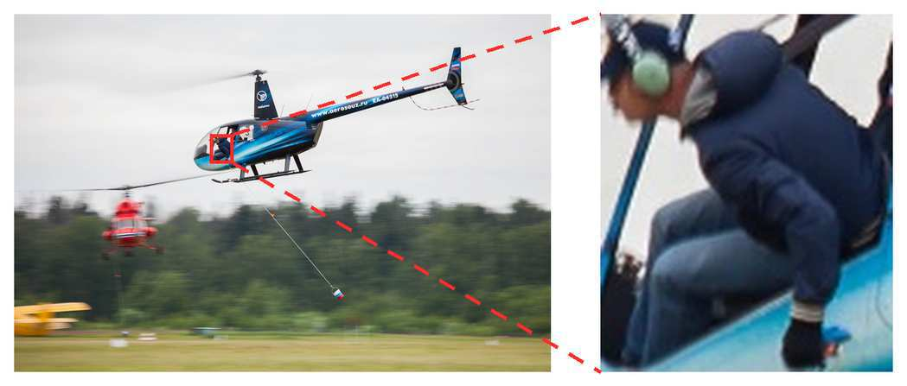

BEFORE · THE GUESS?
“red?”✦
A right answer can be a lucky guess.
Hide the clue. If the model still answers the same way, it may not have looked at all.
CV-OPD introduces contrastive visual supervision to on-policy distillation, helping multimodal language models distinguish answer-relevant evidence from misleading visual cues.
Existing vision-language on-policy distillation gives the teacher privileged access to answer-related image regions. That improves accuracy, but can also teach a shortcut: reproduce the answer without learning to rely on the visual evidence.

Answer accuracy is not enough. A grounded model must change its answer when the evidence changes.
CV-OPD keeps the original on-policy trajectory, then adds a negative teacher conditioned on an unrelated crop from the same image.
The student sees the full image and generates answer prefixes. Both teacher branches reuse those exact prefixes.
← Swipe to explore the full research schematic →
Hide the clue. If the model still answers the same way, it may not have looked at all.
Two teachers see the same question and prefix, but different parts of the image.
Visual-sensitive words glow; irrelevant ones fade. The student learns to ground its answer.
Instead of presenting a wall of metrics, this page follows one training example from the first visual question to the final grounded response.
CV-OPD turns visual grounding into something the training process can explicitly compare, select, and reinforce.
Both teachers judge the same student trajectory.
Only the visual crop changes between the two views.
Useful visual reactions receive the strongest signal.
Explore the paper and the accompanying training and evaluation code included in this project repository.